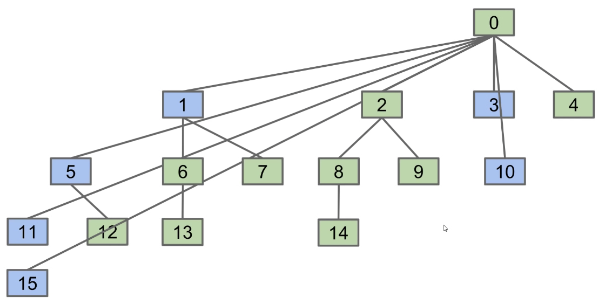
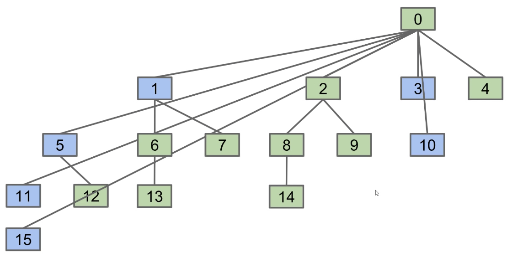

- The height increases logarithmically with respect to the number of elements
- Worst case tree height is Theta(log N)

connect(x, y): Connects x and yisConnected(x, y): Returns true if x and y are connected. Connections can be transitive, i.e. they don't need to be directpublic interface DisjointSets {
/** Connects two items P and Q */
void connect(int p, int q);
/** Checks to see if two items are connected */
boolean isConnected(int p, int q);
}
connect(p, q): Change entries that equal id[p] and id[q]connect(5, 2)
root(5)root(2)root(5)'s value equal to root(2)root(x) becomes expensiveisConnected(int p, int q) requires no changesconnect(int p, int q) needs to somehow keep track of sizes
 

find() is called on it